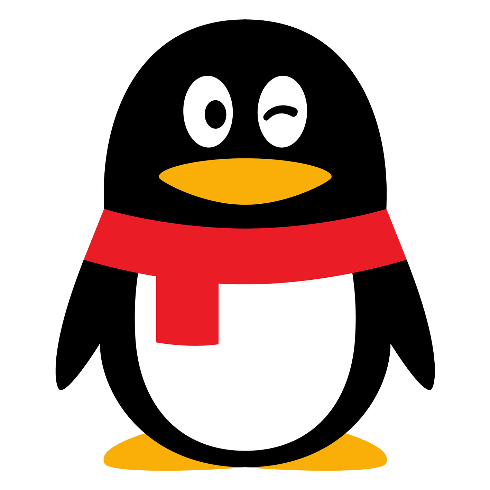
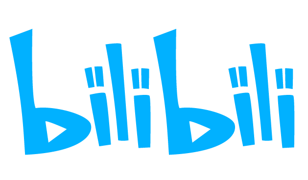

Dancing Line: Community Edition（DLCE）是玩家社区制作的非商业重制版，收录原作关卡与精选饭制关卡。我们继续更新游戏，也维护 Wiki 和多语言翻译。
游戏、Wiki 和翻译各有独立仓库；下载与反馈请进入对应项目。
游戏下载与反馈
获取游戏、查看版本记录，或提交问题。
文档
查阅配置、玩法、版本记录与法律信息。
翻译
由玩家共同维护的游戏多语言文本。
想参与？翻译可以直接提交 Pull Request；Bug 和建议请前往对应项目。
聊天和公告在 Discord、QQ；Bug、翻译与项目协作走 GitHub。


Wiki 里有下载入口、系统要求和常见问题。